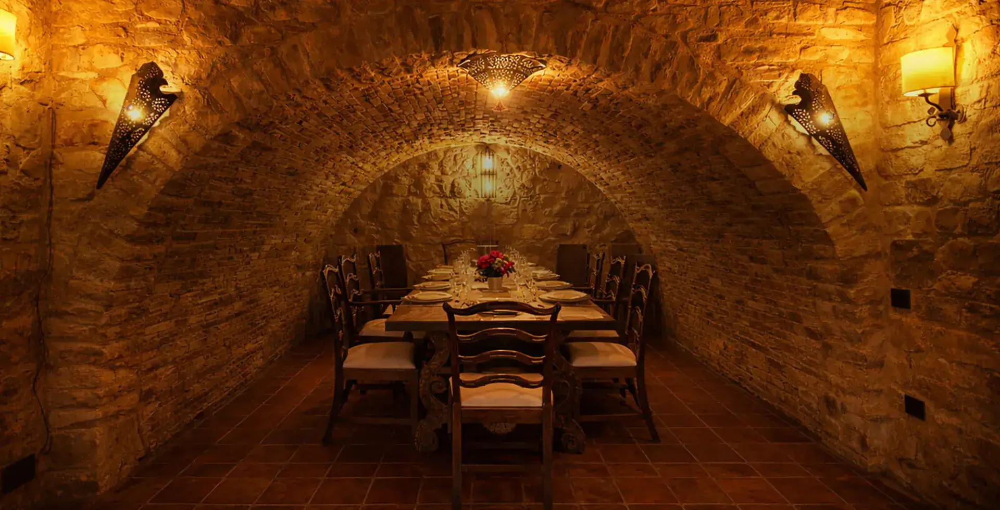

Fuego, horno de leña y tradición castellana.
Reservar mesaEl lechazo se cocina lentamente en horno de leña para conservar la textura, el jugo y la esencia de una tradición gastronómica transmitida durante generaciones.
Una elaboración pausada concebida para compartir sin prisa en el interior de una auténtica fortaleza medieval.

Brasas, horno de leña y piedra crean una atmósfera concebida para cenas pausadas, cocina auténtica y experiencias gastronómicas difíciles de replicar.
Reservar experienciaLechazo tradicional, brasas, piedra y atmósfera medieval en el interior de una auténtica fortaleza.
Reservar experiencia